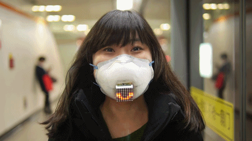

2015
Ethical Things
Human-powered decision making for objects.
As objects become smarter, they encounter situations that require judgment — not just data. Ethical Things is a system where a smart fan faces ethical dilemmas and outsources its reasoning to remote humans via crowdsourcing.
If a smart coffee machine knows about a user's heart condition, should it still make coffee? The answer depends entirely on who you ask. The project connects ordinary objects to a mechanical turk platform: whenever the object encounters a dilemma, it posts the question, waits for responses, and acts accordingly. Owners choose their "ethical agent" — filtering workers by religion, age, education, or worldview to align the object's decisions with their own.
Built with Arduino Yun, the prototype is a fan that stops working mid-use to consult a crowd. The absurdity is intentional. The project asks who gets to decide what the right answer is — and whether delegating that to machines (or crowds) makes it any clearer.
Developed with Matthieu Cherubini, Ethical Things was the founding project of automato.farm. Featured in Creative Applications, Motherboard, and PSFK. IxDA Award winner, Core77 Runner Up for Speculative Concept.
